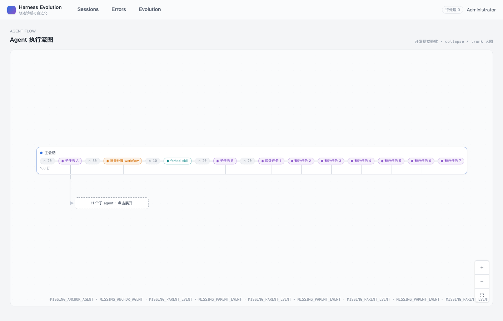
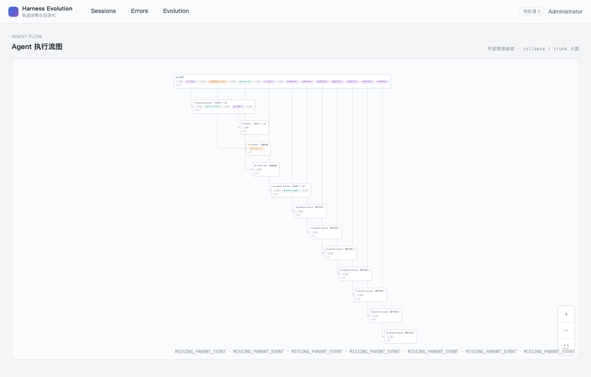
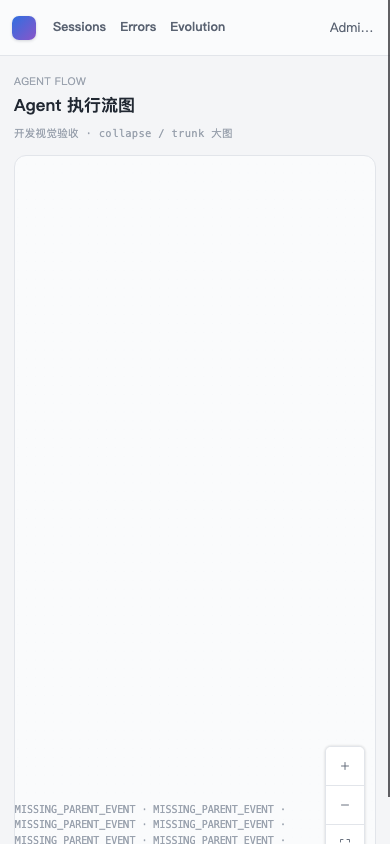

- Issue
- #42 · m3-02 graph layout core
- PR
- #104
- Commit
- b13dbdf
- Runtime
- FastAPI + Vite + headless Chrome/CDP
- Native CUA
- Blocked by locked macOS session; not bypassed
Harness Evolution · PR #104
M3-02 Agent 图布局核心集成冒烟
四节点原型画布、行数比例、折叠/展开、控制按钮与边箭头均通过；390px 展开大图时节点落在可视区外，是当前唯一产品缺陷。
7冒烟场景
6通过
1失败
0意外控制台错误
Environment and Artifact
2026-10-26 · macOS · headless Chrome/CDP · isolated FastAPI + ViteScenario Matrix
6 pass · 1 fail| # | 场景 | 结果 | 观测 | 证据 |
|---|---|---|---|---|
| 01 | 四节点原型画布 | PASS | 主会话、嵌套 Agent、forked skill 与两个子 Agent 可读，720px 画布与原型层级一致。 | screenshots/00-prototype-reference.png screenshots/01-desktop-four-node.png |
| 02 | 行数宽度与箭头边 | PASS | 100/60/20/40 行节点宽度有明确差异；3 条父边均是正交路径且带箭头。 | screenshots/01-desktop-four-node.png |
| 03 | 控制按钮与背景 | PASS | 放大、缩小、适应画布三个按钮均有图标、可访问名称和 ≥24px 点击区。 | screenshots/01-desktop-four-node.png |
| 04 | 11 子 Agent 折叠 | PASS | 大图初始为 2 个可见节点，主会话下的折叠节点显示“11 个子 agent · 点击展开”。 | screenshots/02-collapsed-large.png |
| 05 | 折叠节点展开 | PASS | 点击后节点数由 2 展开为 13；Workflow、forked skill、嵌套与 trunk 通道均被渲染。 | screenshots/03-expanded-large.png |
| 06 | 390px 展开图可见性 | FAIL | 视口缩至 390×844 后未重新 fit，画布内节点全部不可见；只留下诊断码和控件。 | screenshots/04-mobile-expanded-blank.png |
| 07 | 边界与自动化 | PASS | 未请求生产 Session tree；Vue Flow 保持动态 chunk；官方图 E2E 与布局单测通过且无意外控制台错误。 | pnpm test:e2e -- m3-agent-tree pnpm test:web -- agent-tree pnpm verify:bundle |
Issues and Observations
P2 390px 展开大图后节点不可见390px 展开大图后节点不可见
- 位置
- AgentTree.vue 的 fitView 生命周期与响应式尺寸变化
- 复现
- 1408px 打开 large demo，展开 11 子 Agent，再切换到 390×844
- 实际
- 画布只剩空白、MISSING_PARENT_EVENT 诊断和控制按钮，节点全部在可视区外
- 期望
- 尺寸变化后重新 fit 或保持节点可读可操作
- 测试缺口
- 现有 390px E2E 只断言画布高度与 controls，没有断言节点 bounding box 仍在视口内
未修复
Evidence
5 screenshots




Automated Coverage Assessment
4 areas reviewed| 区域 | 覆盖 | 结论 | 建议 |
|---|---|---|---|
| 布局核心 | 单元测试 + 真实 Chrome | 纯布局、trunk、折叠、锚点与确定性均有自动证据。 | 保留布局单测为几何事实源。 |
| 浏览器渲染 | headless Chrome/CDP | 真实 Vue Flow 节点、边、标记、Controls 与 Background 已验证。 | 补 390px 节点可见性断言并修复 resize fit。 |
| 原生 Computer Use | 阻塞 | macOS 锁屏，无法读取桌面前台；未绕过锁屏或伪造 CUA 证据。 | 解锁后可在同一报告补桌面截图，不影响 CDP 功能证据。 |
| 范围边界 | 代码与网络请求 | 未请求生产 Session tree，未渲染问题卡，DEV 路由不进入生产。 | 生产接线与问题卡分别留给 m3-03、m4。 |
Conclusion
需修复后复测桌面、折叠和展开布局与原型一致，但 390px 展开图的节点可见性失败。
- PR #104 已记录可复现检视意见。
- 修复应监听容器尺寸并在 resize 后安全 fit。
- 真正 390px E2E 需断言至少一个节点 bounding box 位于视口内。
证据来源：真实 FastAPI、Vite、headless Chrome/CDP 截图与自动测试；HTML 由官方 renderer 生成。